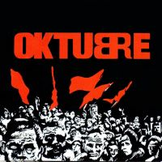
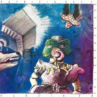
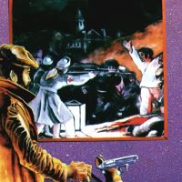
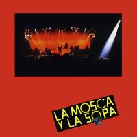
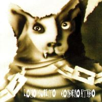
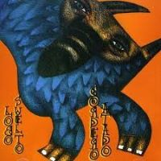

Gulp! fue grabado en 1984. La grabación tiene un aire festivo, con la colaboración de Lito Vitale en piano, Gonzalo Palacios en saxofón, los coros corrieron por parte de Claudia Puyó, Laura Hatton y María Calzada. Para la presentación del álbum la banda alquilo el Teatro Astros los días 16 y 17 de agosto pero, días antes del concierto, Valeria Lynch agrega fechas a sus shows y la banda queda afuera. Finalmente Gulp! salio a las calles a mediados de 1985 en forma absolutamente independiente, y se transformo en una prueba eficiente del poder de la banda. La tirada inicial del abum se agota rapidamente, a pesar de ser realizado casi artesanalmente y en forma independiente por Rocambole, un artista plastico amigo del grupo.
El nombre de este album es dado por el indio y su fanatismo en su infancia a los comics y revistas que leia, Gulp! viene de la expresion de los comics y de la traduccion al español ¡Tragar!. Esto dice Marcelo Figueras: "El titulo remite a una onomatopeya, de las que usaban en las historietas. El indio era fan de estas historietas desde chico". "Gulp" es el ruido que ponen en el globito cuando alguien se traga algo, y tenia que ver con esta sensacion: que nos estabamos tragando algo gigante como pueblo, a pesar de que en la superficie parecia estar todo bien y que habia vuelto a imperar la libertad entre nosotros.
Los arreglos y las canciones han sido debidamente registrados a nombre del dúo Indio Solari y Skay Beilinson
Oktubre es el segundo álbum de la banda. Fue editado y grabado en octubre de 1986, el álbum se caracteriza por un sonido que incorporó influencias del new wave y el post-punk. Este esta inspirado en las revoluciones sociales históricas y el contexto bélico internacional de la Guerra fría también del escenario político argentino en el período de la vuelta a la democracia.
El arte de tapa fue diseñado por el artista plástico Rocambole y se inspiro en la Revolución rusa de 1917.En 2007, la revista Rolling Stone Argentina situó a Oktubre en el puesto nro. 4 en su lista de Los 100 mejores álbumes del rock argentino.
Este fue publicado el 9 de mayo de 1988. Según el Indio Solari es una de las grabaciones que mejor capta el espíritu y la idea musical del grupo durante esos años.
“Desde que han aparecido los mass-media, el reflejo vigente es el de la televisión que promete, entre otras cosas, vincularte con todo el mundo. Pero lo que en realidad tenemos es esa cosa espantosa de una persona sola en un living, mirando una TV. No está con nadie, está sola. Eso es para nosotros el ojo idiota. Esa TV que lo mira” -Indio
Fue publicado el 7 de octubre de 1989. la presentación oficial se realizó en Satisfaction durante cuatro noches, el 20, 21, 27 y 28 de octubre de 1989 estas no se dieron luego de una encendida polémica con una parte de la prensa ya que se empezaron a generar episodios de violencia en los ingresos a las salas en las que se brindaban esos conciertos. En septiembre de esta temporada, efectuó presentaciones durante tres fines de semana consecutivos en Satisfaction. Alrededor de 2000 personas en cada convocatoria garantizaban un clima jubiloso y de algarabía para todos aquellos que podían acceder al «ritual ricotero”. Los problemas surgían con los que no podían comprar sus entradas (porque ya se habían agotado) y pretendían entrar por la fuerza.
La tapa es de Rocambole. Es una relectura de la pintura de Goya “El tres de mayo de 1808 en Madrid”, en vez de soldados, tiene miembros de la Cruz Roja como fusiladores. Rocambole leyó que Goya vio las ejecuciones por una ventana. Por eso, en el dibujo, lo pone como observador del crimen junto con un perro con cara de revolver.
Publicado el 27 de octubre de 1991. Fue presentado el 22, 23 y 24 de noviembre de 1991 en Autopista Center. En abril de ese año, durante un show del grupo en el mítico estadio Obras Sanitarias, una razzia policial detuvo ilegalmente y asesinó a Walter Bulacio, un joven menor de edad cuyo único delito era querer ver a su banda favorita. A partir de este suceso lamentable la prensa estigmatizó al grupo y lo tildó de violento.El grupo optó por mantenerse en silencio y se recluyó para grabar un nuevo trabajo discográfico.
En parte se ve reflejado el momento histórico que estaba atravesando nuestro país. A comienzos de los noventas, con la incentivación de un modelo económico a raíz de inversiones extranjeras, la igualdad del peso y el dólar, el consumo masivo de bienes de lujo; en fin una mentira que a la larga produjo lo que hoy en día nos toca enfrentar e intentar superar.
"La mosca esta en la sopa. Aceptémoslo. Sentados a la mesa servidas están nuestros héroes. Esos tres bombones que creen que arman un gran cacao. Esos que han ganado reputación gracias a los papeles duros y son muñecos vudú de ésta sociedad-espectáculo. El primero de los comensales rechaza de pleno el plato. El segundo quita la mosca del plato y toma la sopa. El tercero exprime la mosca dentro del plato hasta la última gotita y luego come con fruición. Mientras tanto, lenta, muy lentamente, se les mete la muerte por donde los monos se meten la manzana"
En el Estadio Huracán el 19 y 20 de noviembre de 1993, en una fecha doble. Las canciones se convirtieron rápidamente en himnos de la banda. se utilizaron imágenes de lobos para ilustrar el CD número 1, y de corderos para el segundo. Desde el punto de vista musical el disco que corresponde al Lobo suelto es más oscuro y dramático que el segundo disco. Este fue ilustrado por Rocambole. los dos discos temáticos tratan sobre Lupus el Lobo y de Rulo el Cordero, con distintas canciones y portadas totalmente opuestas.
Contiene El arte del buen comer. Las mismas estrofas hablan de que Pituca es "el mejor culo para su sillón", algo que, según el mito, significa que era el más apto para ocupar la presidencia de la Nación.
En esta segunda parte del disco el artista de ilustriación cambio, no fue Rocambole quien lo ilustro sino que fue Semilla Bucciarelli.
Este fue publicado el 1 de agosto de 1996. Fue presentado en L´etoile (San Carlos Centro) el 16, 17 y 18 de agosto de 1996. Este nació de la alquimia entre el Indio Solari y Skay Beilinson. Un año de labor desde las primeras bases hasta la edición final tuvieron capítulos entre los que figuran “demos hogareños” y un viaje a San Pablo, Brasil donde se encontraron con el bajista Néstor Madrid.El disco revolucionó el packaging discográfico argentino, ya que se incluyó en un formato no tradicional.
Es un disco conceptual que, a través de la idea de un ficticio hijo del demonio llamado Luzbelito, juega con las ambigüedades de las creencias y comportamientos humanos desde distintos puntos de vista. Para ilustrar este disco Rocambole también decidió actualizar sus conocimientos: aprendió a diseñar en computadora, y con esa herramienta le dio vida a las ilustraciones de CD.
Lanzado el 18 de noviembre de 1998. Fue presentado el 18 y 19 de diciembre de 1998 en el Estadio Racing Club de Avellaneda. La grabación presenta un giro en el tradicional sonido del grupo, con canciones más melódicas, y mayor uso de las posibilidades que brinda el estudio y las computadoras en la confección de una canción de rock.
Este se publicado el viernes 17 de noviembre de 2000. Fue presentado el 22 y 23 de abril de 2001 en el Estadio Centenario de Montevideo. La banda busca nuevos sonidos y formas para sus temas. Aparte de la influencia electrónica, también se reconocen vestigios de música celta, cuerdas y ritmos que recuerdan a las murgas.